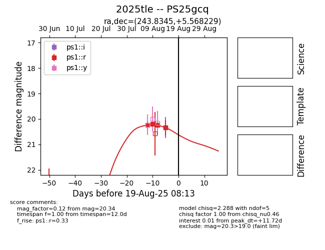

Target 2025tle at 2025-08-19 08:13, see:
TNS: wis-tns.org/object/2025tle
YSE: ziggy.ucolick.org/yse/transient_detail/2025tle
alt names
2025tle (yse,tns)
PS25gcq (panstarrs)
coordinates:
equatorial (ra, dec) = (243.8345,+5.56823)
galactic (l, b) = (18.4709,+37.01251)
photometry
last ps1::r=20.34
4 ps1::r detections
